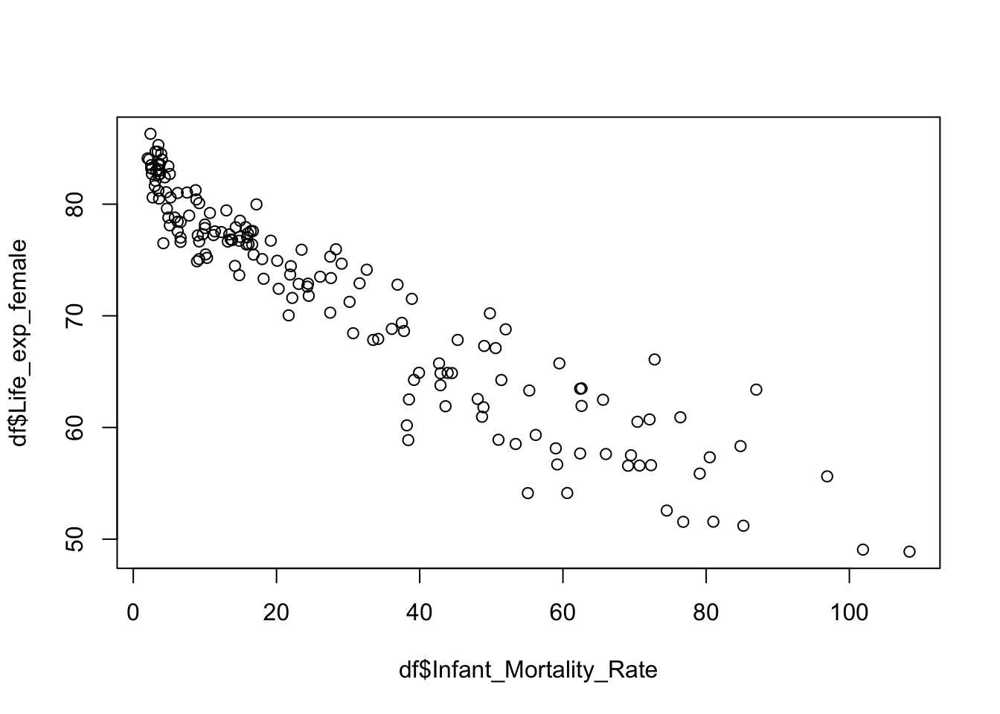

# Preliminaries ####
# remove everything from the environment
rm(list = ls())
# set the working directory:
setwd("~/methods/") # adjust the directory address accordingly7 Correlation between Numerical Variables
Last week, we learned cross-tabulation to explore an association between two categorical variables. This week, we will continue with the association between numerical variables.
We are going to explore three pairs of variables:
- Infant mortality rate and Female life expectancy
- GDP per capita and v2x_polyarchy (numerical democracy measure)
- Natural resources (as % of GDP) and v2x_polyarchy
If you wish, you can continue from last week’s script because we are going to work with the same dataset. It is also fine if you want a clean start.
# require the packages
library(tidyverse)── Attaching core tidyverse packages ──────────────────────── tidyverse 2.0.0 ──
✔ dplyr 1.1.4 ✔ readr 2.1.5
✔ forcats 1.0.0 ✔ stringr 1.5.1
✔ ggplot2 3.5.1 ✔ tibble 3.2.1
✔ lubridate 1.9.3 ✔ tidyr 1.3.1
✔ purrr 1.0.2
── Conflicts ────────────────────────────────────────── tidyverse_conflicts() ──
✖ dplyr::filter() masks stats::filter()
✖ dplyr::lag() masks stats::lag()
ℹ Use the conflicted package (<http://conflicted.r-lib.org/>) to force all conflicts to become errors# import the data:
df <- read.csv("data/world_in_2010.csv")7.1 Infant mortality rate and Female life expectancy
We start with two numerical variables that we expect to be highly correlated: infant mortality rate and female life expectancy. These two are both related to health outcomes: developed countries with good healthcare have low infant mortality and high female life expectancy whereas underdeveloped countries with limited or no healthcare have high infant mortality and low female life expectancy.
We start with this example because we know they are highly correlated (recall the lecture slides).
Although we expect the two variables to be highly correlated, we don’t think there is a causal relationship. There is an underlying factor, the health care quality, which influences both variables of interest as seen in Figure 7.1.
flowchart LR Z[Health care] --> X[Female life expectancy] Z --> Y[Infant mortality rate]
It is always a good idea to explore the variables of interest one by one. Recall that we called this univariate analysis. It refers to doing a numerical summary (descriptive statistics) and some visual exploration.
7.2 Univariate analysis: Female life expectancy
# Numerical summary of Female life expectancy
summary(df$Life_exp_female) Min. 1st Qu. Median Mean 3rd Qu. Max.
48.88 64.41 74.91 71.94 78.73 86.30 The highest value for Life_exp_female is 86.30 and the lowest value is 48.88. These are reasonable values for the life expectancy of humans. There is also a striking inequality between countries: almost 40 years of difference in life expectancy between the best and worst performing countries. This is a huge gap.
For completeness, I will also report the standard deviation.
# calculate the standard deviation
sd(df$Life_exp_female) |> round(2)[1] 9.35Let’s continue with visual summaries.
# histogram
hist(df$Life_exp_female,
breaks = seq(45, 90, 2.5), #each bin covers 2.5 years (spanning from 45 to 90)
main = "Distribution of Female Life Expectancy in 2010",
xlab = "Age",
ylab = "Number of Countries",
xlim = c(45, 90) # x-axis span from 45 to 90
)What about a boxplot?
# boxplot
boxplot(df$Life_exp_female,
ylim = c(45, 90), # y-axis span from 45 to 90
ylab = "Age",
main = "Female Life Expectancy in 2010"
)7.3 Univariate analysis: Infant mortality rate
Infant_Mortality_Rate measures the number of infants per 1,000 live births who die before reaching one year of age.
# Numerical summary
summary(df$Infant_Mortality_Rate) Min. 1st Qu. Median Mean 3rd Qu. Max. NA's
2.00 7.50 19.20 29.25 48.10 108.40 1 Again, let’s check if these values make sense. The values span from 2 (minimum) to 108.40 (maximum). The highest value is extremely high: more than 10% of newborns die within the first year. Although this is shockingly high, it is a possible value. In contrast, any negative value would tell us that there is something wrong with the data because the mortality rate cannot be below zero.
Which countries have the highest and lowest rates? We learned how to check these.
# Countries with highest infant mortality
df |>
select(Country_Name, Infant_Mortality_Rate) |>
arrange(desc(Infant_Mortality_Rate)) |>
head(5) Country_Name Infant_Mortality_Rate
1 Sierra Leo 108.4
2 Central Af 101.9
3 Somalia 96.9
4 Haiti 87.0
5 Chad 85.2# Countries with lowest infant mortality
df |>
select(Country_Name, Infant_Mortality_Rate) |>
arrange(Infant_Mortality_Rate) |>
head(5) Country_Name Infant_Mortality_Rate
1 Iceland 2.0
2 Singapore 2.2
3 Japan 2.4
4 Finland 2.5
5 Sweden 2.5Be careful that one observation is missing. Which country is that?
# missing data
df$Country_Name[is.na(df$Infant_Mortality_Rate)][1] "Kosovo"# standard deviation: make sure to remove the missing value
sd(df$Infant_Mortality_Rate, na.rm = TRUE)[1] 25.89212# Beware: if you fail to tell R to remove the missing value, you will get a missing value
sd(df$Infant_Mortality_Rate)[1] NALet’s continue with visual summaries.
# Histogram:
hist(df$Infant_Mortality_Rate,
main = "Distribution of Infant Mortality Rate in 2010",
ylab = "Number of Countries",
xlab = "Mortality Rate (in 1000)"
)Let’s see a box plot too:
boxplot(df$Infant_Mortality_Rate,
main = "Distribution of Infant Mortality Rate in 2010",
ylab = "Mortality Rate (in 1000)"
)
7.4 Bivariate analysis
Next, we explore Life_exp_female and Infant_Mortality_Rate together. Let’s start with a scatter plot!
There are two dimensions in a scatter plot: vertical (y-axis) and horizontal (x-axis). Traditionally, the outcome variable should go to the y-axis whereas the independent variable should go to the x-axis.
In this example, however, we are just exploring the relationship between two variables without designating any one of them as outcome or explanatory. It would not matter which variable goes to which axis.
# Scatter plot of Infant Mortality Rate and Female Life Expectancy
plot(df$Infant_Mortality_Rate, df$Life_exp_female) 
Note
Note that R showed the first variable (Infant_Mortality_Rate) on the x-axis whereas the second variable (Infant_Mortality_Rate) on the y-axis. This is all in line with the conventions we learned.
Just by looking at this scatter plot, we can visually comprehend that there is a strong linear association between the variables! There is a negative relationship: the higher the infant mortality rate, the lower the female life expectancy. This is something we would strongly expect.
This scatter plot was a good start, but it could look more professional. Let’s add titles, etc.
plot(df$Infant_Mortality_Rate, df$Life_exp_female,
main = "World in 2010: Infant Mortality Rate and Female Life Expectancy",
xlab = "Infant Mortality Rate (in 1000)",
ylab = "Female Life Expectancy",
pch = 16, # change points from hollow circles to filled circle
cex = 0.5 # make the points smaller (half in size)
)Finally, let’s calculate the correlation coefficient. Beware that one observation is missing! Because of this, we must make sure that R only considers pairwise complete observations.
# Correlation coefficient:
cor(df$Infant_Mortality_Rate, df$Life_exp_female, use = "pairwise.complete")[1] -0.9420862The correlation coefficient is \(-0.94\). This value is close to the lowest extreme, \(-1\). There is a very strong linear correlation between the two variables!
Let’s also see a very strong positive correlation. Male and female life expectancy should be highly correlated. This is common sense expectation: in countries where women are expected to live long, men are also expected to live long.
Let’s see if that is the case.
# scatter plot of male and female life expectancy
plot(df$Life_exp_male, df$Life_exp_female,
main = "World in 2010: Life Expectancy by Gender",
xlab = "Male Life Expectancy",
ylab = "Female Life Expectancy",
pch = 16, # change points from hollow circles to filled circle
cex = 0.5 # make the points smaller (half in size)
)# Correlation coefficient:
cor(df$Life_exp_male, df$Life_exp_female, use = "pairwise.complete") |> round(2)[1] 0.97This is a very strong positive correlation as we expected.
7.5 Example: No linear association
Next, let’s see an example where there is very weak linear correlation.
Is there a linear relationship between female life expectancy and voter turnout in the last election? I don’t think there is a reason for two variables to be correlated.
# Turnout variable summary
summary(df$Turnout) Min. 1st Qu. Median Mean 3rd Qu. Max. NA's
0.1800 0.5325 0.6700 0.6576 0.7700 1.0000 8 # Correlation between Turnout and Female Life Expectancy
cor(df$Turnout, df$Life_exp_female, use = "pairwise.complete") |> round(2)[1] 0.06The correlation coefficient is 0.06. This is pretty close to 0. Compared to Infant_Mortality_Rate or Life_exp_male, there is a very weak association.
Let’s visually display.
# a scatter plot:
plot(df$Life_exp_female, df$Turnout,
main = "Female Life Expectancy and Voter Turnout (2010)",
xlab = "Female Life Expectancy (Years)",
ylab = "Voter Turnout (%)",
pch = 16
)7.6 Task #1: Resource curse theory revisited
We are now returning back to the resource curse theory, which is something we worked on last week. Recall that this theory expects natural resources to hinder democracy. Is there a relationship between higher rates of natural resources (as % of GDP) and lower levels of democracy?
As we have seen last week, the dataset comes with two numerical variables, v2x_polyarchy and Natural_resources_rents_perc_of_GDP. There is no need to do any data transformation, as we need them in their numerical form.
Your task is to explore the relationship between the two. More specifically, you should:
- Present a scatter plot of
v2x_polyarchyandNatural_resources_rents_perc_of_GDP. It should look like in Figure 7.2 - Report the correlation coefficient.
7.7 Task #2: Explore the Modernization Theory
Finally, we turn to modernization theory, which posits that economic development leads to democratization. This theory expects to find a correlation between economic development and democracy.
- Explore the variable
GDP_pc_PPP. This variable is GDP per capita (at purchasing power parity). Use this as a proxy measurement for economic development.- Present appropriate numerical and visual summaries. For numerical summary, you should report n, mean, sd, and the five-point summary. See Table 7.1 for how it should look like.
- Present a scatter plot
v2x_polyarchyandGDP_pc_PPP. - Report the correlation coefficient.
| N | Min | Q1 | Median | Mean | Q3 | Max | SD | |
|---|---|---|---|---|---|---|---|---|
| GDP per capita (PPP) | 161 | 646.86 | 3127.02 | 9627.94 | 15494.4 | 20497.93 | 122609.4 | 17154.74 |